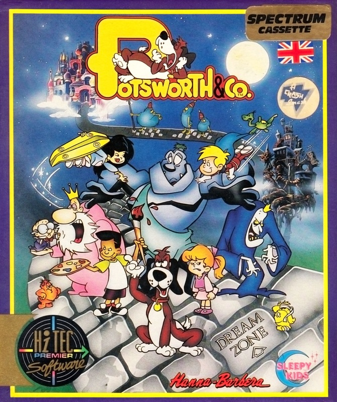
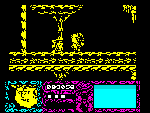
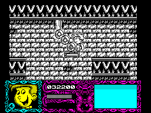

Potsworth & Co


{kind=link}

| Publisher: | Hi-Tec Software |
| Price: | £6.99 |
| Year: | 1992 |
| Source: | CRASH, Issue 97 |

Owwww! That pampered pooch has arrived at CRASH Towers with licks and slobbers for everyone (wey-hey!). NICK ROBERTS is the man with the mop and bucket ready to clean up any little spillages!

Imagine a cuddly Springer spaniel standing on its speaking in an upper-class English accent. Now what does that remind you of? The nightmare you had last night? Getting drunk down the local disco?
Nope, it should remind you of this squillerilliant Hanna-Barbera cartoon character, Potsworth!
In real life he’s just the family pet and friend to a bunch of kids: Rosie, Nick, Carter and Keiko. But when they go to sleep they become the Midnight Patrol and all enter the Dream Zone to become super human (dee-dee dah-dah, dee-dee dah-dah...)!
WAKEY WAKEY!

but then haven’t they all? Oops,
I didn’t say that missus.
To stay in the Dream Zone the Grand Dozer must be asleep, a fact the evil Nightmare Prince is only too aware of. He tries anything in his power to wake up the snoozing bloke and it’s the Midnight Patrol’s job to find the Potion of Slumber and stop him.
The powers held by each character correspond to their characteristics in real life. Rosey’s a bit of a loud mouth so she stuns the nasties by shouting at them. Nick’s a big fan of comic book superheroes so he becomes Super Duper Man. Carter’s a great artist so anything he draws comes to life, and Keiko, a skateboard freak, rides the only flying ’board in existence!
Between them — and Potsworth, of course — they have to battle against Midnight Prince’s minions in six zones of arcade mayhem.
I WANT CANDY!

flying girders, or is it Sonic?
Each gamezone has a style to suit its player character. The Cave, Super, Candy, Rainbow and Carnival Zones are packed with brilliant touches that keep you addicted for ages.
Remote switches control lifts, conveyor belts and other contraptions that help the team’s quest. Favourites of mine are the swinging girders and practically everything in the Carnival Zone. Waltzers, dodgems, pirate ship and log flume, they’re all packed in — it’s the nearest thing to visiting a theme park without leaving the house!
You collect certain objects from each zone to keep the Dozer asleep. You can guarantee some of them are hidden away in some far-reaching corner of the vast zones so you have to work hard at finding them.
Touching any of the horrible things out to munch our heroes causes an energy bar to drop. Toy robots, pigmy bats, nosey parkers, chocolate mice, wellington men, hot dogs and mutant candy floss are just some of the monsters inhabiting the zones.
if the energy reaches zero, guess whet happens? Yup, the character loses a life, but luckily restarts where they left off.
A feature you don’t see very often on the Speccy these days is a continue option. This is available several times before the Midnight Patrol has to start from the beginning again so should reduce the frustration many game’s high difficulty produces.
Visual Impact have done a great job in programming our poochy pal (complete with marrowbone!). Each zone has something new to offer, in terms of both graphics and playability.
The backgrounds and sprites have all been painstakingly converted from the cartoons and look great. Fans of the series certainly won’t be disappointed with the results.
Unfortunately, Potsworth’s a multi-load, each level loaded separately. All the levels are stored on one side of the tape, though, so it’s less confusing than many multi-loads I’ve come across.
Potsworth & Co is another excellent cartoon series from H-B and it’s been converted into a fan-dabby-dozy game you can’t afford to miss — especially as it’s on the new Premier label at only £6.99!
NICK — 91%

Dogs get a raw deal don’t they? Cigarette butts are ‘dog ends’, if you’re having a bad time it’s a ‘dog’s life’, if you’re selfish you’re a ‘dog in a manger’. The list is endless. Fortunately for Potsworth, he’s probably the most cosetted canine this side of the equator, and as for the computer game, well, we’re talking doggy treats galore. Bearing in mind I’m a Sonic freak (I’d take him home and have his babies given half the chance) and this could be called the Speccy version of said small prickly creature, need I say more? Yes? Okay. I like it. The sprites are all very detailed and instantly recognisable from the cartoon. Each level’s totally different from the last and the gameplay keeps getting better and better from level to level. The first zone looks a bit budgety but later levels are quality stuff which would be well worth the £10.99 many software houses charge for abysmal full-pricers. Hi-Tec should be well proud of themselves for turning Potsworth & Co out for £6.99 and if the rest of their Premier range is as good as this, they’re onto a winner.
LUCY — 89%
RATING
A fun, addictive conversion of the blockbusting cartoon.
| Presentation: | 88% |
| Graphics: | 91% |
| Sound: | 89% |
| Playability: | 93% |
| Addictivity: | 90% |
| Overall: | 90% |